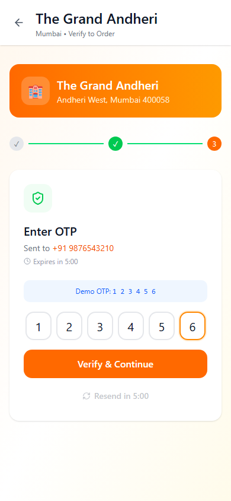
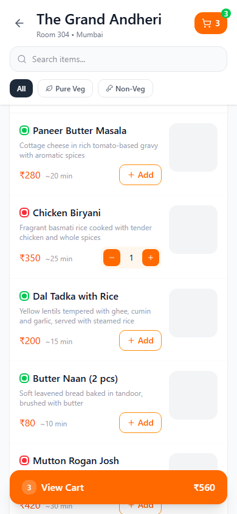
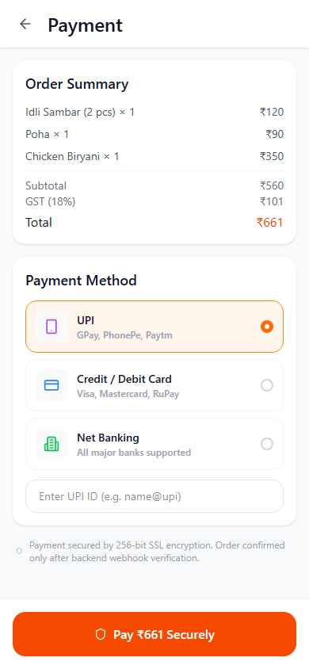
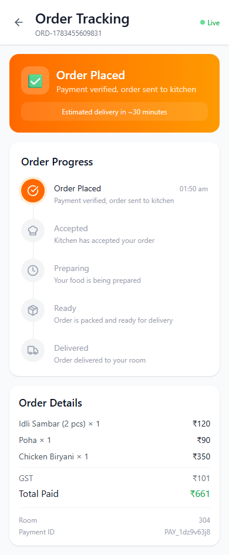

Role
Freelance Product & UX Designer, covering the guest, kitchen, and admin experiences plus the shared design system.
The guest experience is deliberately linear, with no back-tracking once verification starts: a QR scan (with a manual hotel-and-room-number fallback for when scanning fails), OTP verification re-checked every session since no login persists between visits, a menu filtered by veg/non-veg and organized into categories, a prepaid-only cart with a full GST breakdown, and a confirmation screen where the order ID, estimated time, and kitchen routing are handled invisibly in the background.
I carried this through two fidelity stages — structural wireframes to lock the flow logic first, then this fully-branded high-fidelity build in orange, with realistic menu content, live-feeling payment states ("Processing Payment," "Verifying Payment"), and a working demo mode that simulates the QR scan for testing without needing a real hotel room.





